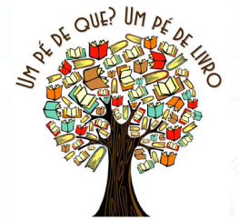

|
O incentivo a leitura nem sempre é fácil por isso nós do “Oque VaiLer Hoje?” selecionamos alguns dos melhores livros das literaturas brasileira, inglesa e norte americana. São livros interessantes, fáceis de ler e com boa temática, escritos por grandes autores de cada nação aqui citada. Este projeto tem como objetivo incentivar alunos, universitários e pessoas que não tiveram contato o bastante com a literatura em toda sua vida, a leitura destas obras ajuda o desenvolvimento mental, estimula a criatividade e enriquece o vocabulário, além de melhorar a interpretação de textos e reflexão critica. Por isso nós convidamos você a entrar de cabeça nesse mundo! |
 |